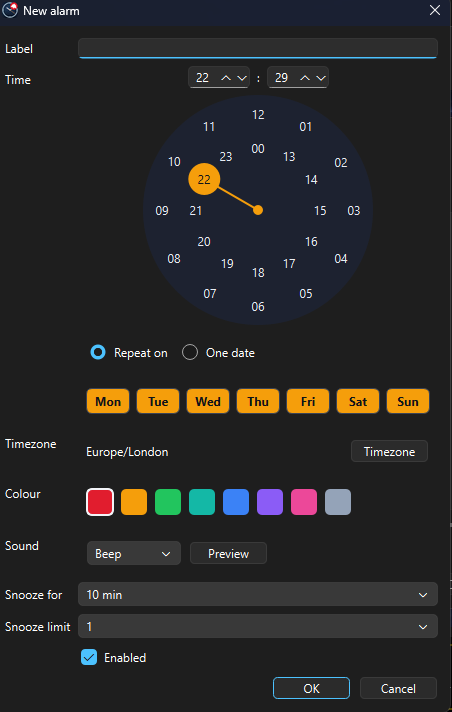

What Fancy Clock does
A focused set of things a desktop clock should get right and nothing it should not.
Analog and digital modes
Switch between a clean sweeping analog dial and a crisp digital readout. The mode you pick is remembered between sessions.
Automatic timezone localization
Reads your system timezone and shows the correct local time, with region and city names translated into your own language.
Accurate to real time
An optional NTP time source keeps the display honest, so the clock is right even when the machine clock has drifted.
Animated video skins
Nine backdrops from a subtle Starfield to a spinning galaxy, waves and a wormhole. Or run it plain and quiet.
Frameless and draggable
No title bar, no chrome. Grab it anywhere and place it exactly where you want it on any monitor. A single instance, never a stack of windows.
Adjustable opacity
Dim the clock from solid down to a faint overlay with the View menu slider, Ctrl with the arrow keys or Ctrl with the mouse wheel; your level is remembered. Available on Windows and macOS.
Alarms that behave like a phone's
Weekly or one-off alarms with labels, colours, five sounds, snooze budgets and a missed-alarm summary. Set on a clock-face picker; runs from the system tray.
Proper alarms, on your desktop
The alarm experience you expect from a phone, without the phone.

Set it like a clock
Pick the time on a clock-face dial or type it. Repeat on any weekdays or fire once on a chosen date, in any timezone you like.
Snooze on your terms
Per-alarm snooze from 5 minutes to 24 hours, a budget of 1, 3, 5 or unlimited snoozes per ring and a re-pickable duration every time you snooze.
Five sounds, your colours
Beep, Chime, Bell, Pulse or Marimba, previewable in the editor, with a colour per alarm so you know which one is ringing at a glance.
Lives in the tray
Close to the system tray and the alarms keep watching. The tray shows your next alarm; an optional setting starts Fancy Clock when you sign in.
Never silently loses one
Machine asleep or the app closed when an alarm was due? You get a missed-alarms summary the moment it is back, every time. If the saved alarms file is ever damaged, you are told how many entries could not be read rather than left to find out by oversleeping.
Honest about time
Alarms fire on the same NTP-corrected time the clocks display and daylight-saving transitions are handled correctly, not approximately.
Nine skins, one clock
Pick a mood. Every skin sits behind the same clear dial and your choice is saved.
Starfield
Mesmerize
Spinning Galaxy
Wormhole
Waves
Spiral
Spiral Clock
Flower Tunnel
Fancy Circles
Speaks your language
The interface and the timezone names are translated across more than 70 languages and over 240 regional locales, from Arabic and Bengali to Vietnamese and Welsh. Numbers follow your locale too. Fancy Clock picks the right one from your system automatically; you can override it whenever you like.